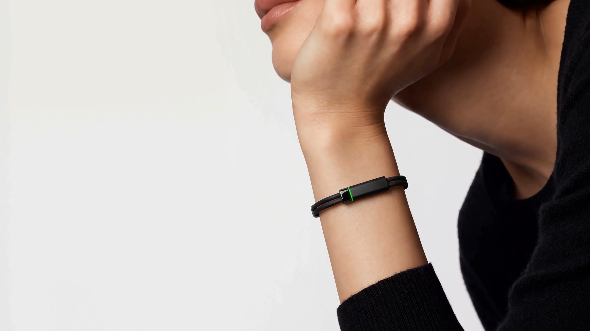
Keep what
mattered.
A wristband with no screen and nothing to press. Larkin listens through your day and gives it back as something you can read, learn from and build on.
Fully refundable · Ships Q1 2027
You can't see yourself the way other people do.
Larkin can. It listens through your day and shows you how it really went — what you said, what landed, and what you keep coming back to — so you can build on it.
How it works
Wear it. Live your day. Read it back.
-
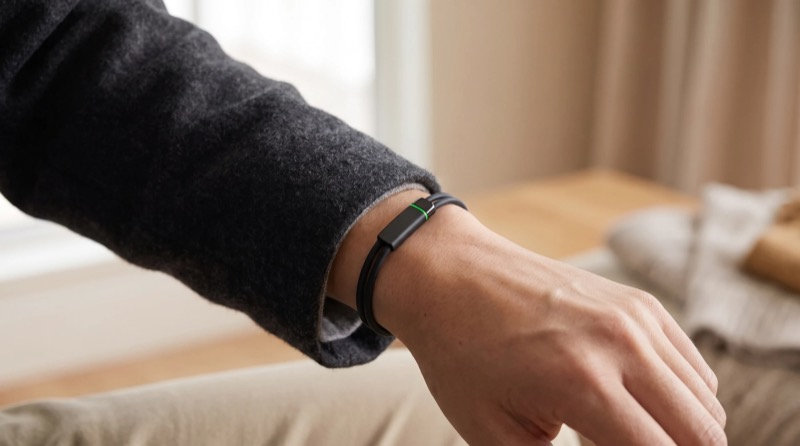
01Put it on
Slip the band on in the morning. No screen, no buttons to learn, a week of battery.
-
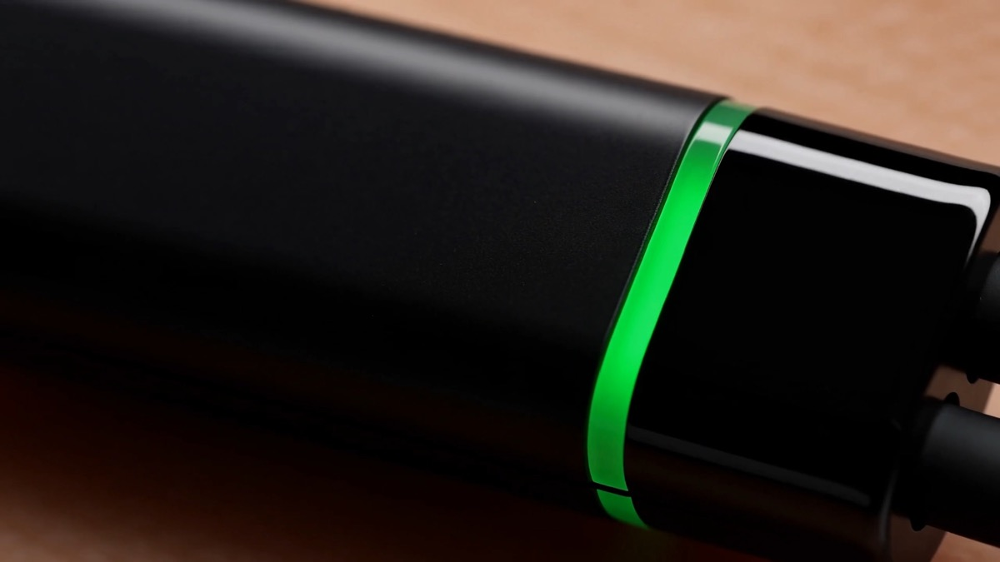
02Go through your day
Meetings, the school run, dinner. The green light means it's listening. Hold the module for two seconds to pause it.
-
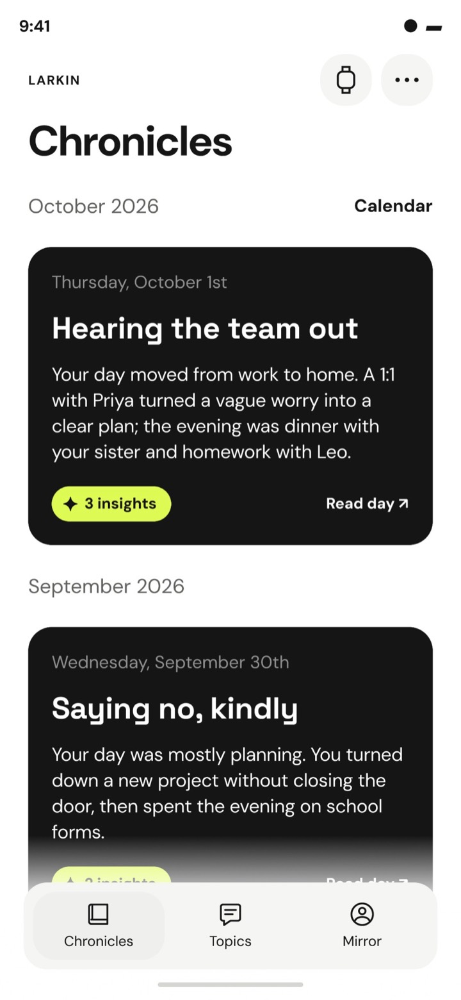
03Read it back
Each evening your day arrives in the app as a chapter: what happened, who you talked to, and what's worth keeping.
The app
Your days, read back to you.
Five places to look, each one built from what you actually said.
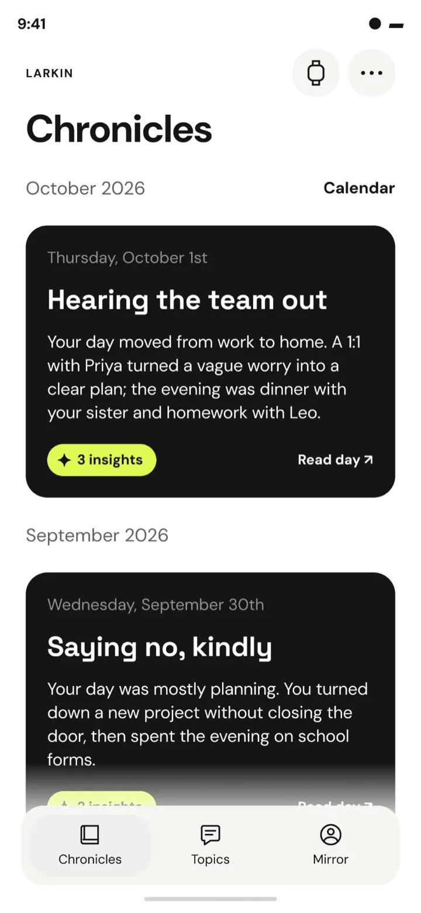
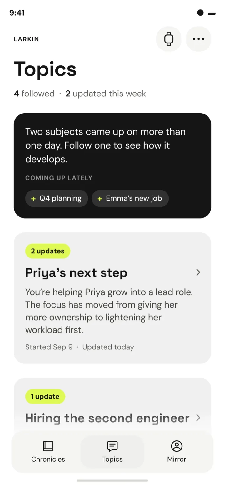
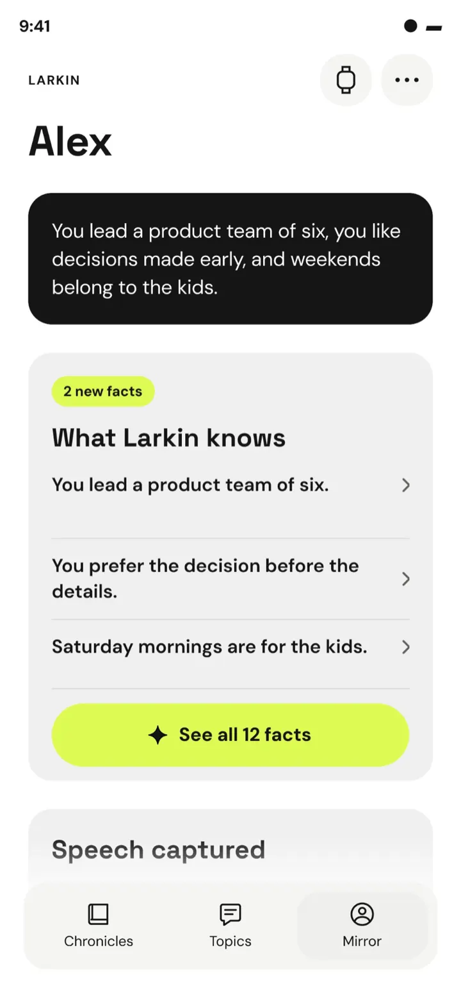
-
01 Chronicles
Every day becomes a chapter.
Larkin gives each day a title and a few honest lines. "Hearing the team out." "Saying no, kindly." Scroll back a month and it reads like a story, not a transcript.
-
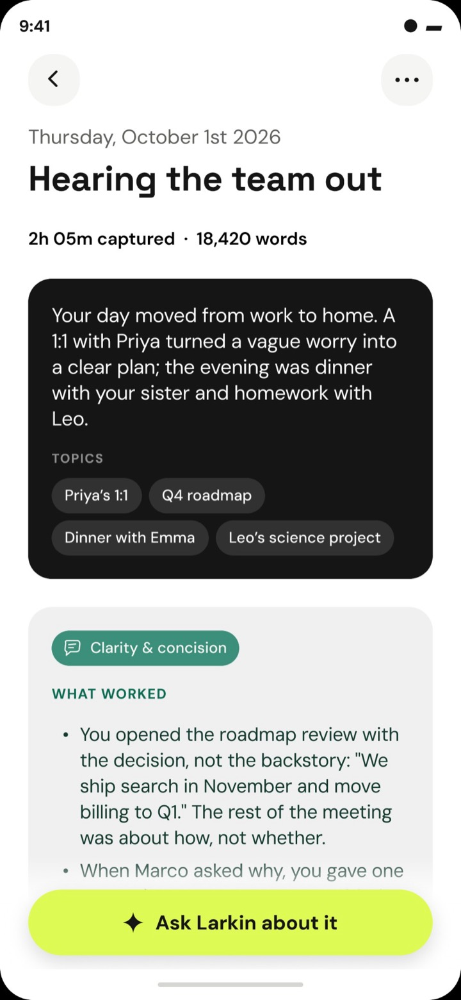
02 Day
Open any day.
How much was captured, who you talked to, and the topics that came up — a 1:1, the roadmap, dinner with your sister. Then ask Larkin anything about it.
-
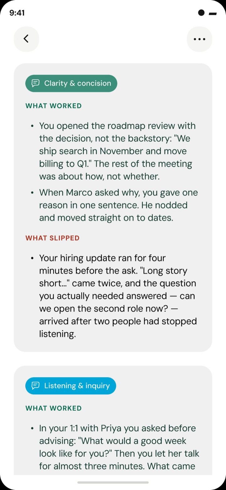
03 Insights
Honest feedback, with receipts.
What worked and what slipped, quoted from your own conversations — then one thing to try next. Like a coach who was actually in the room.
-
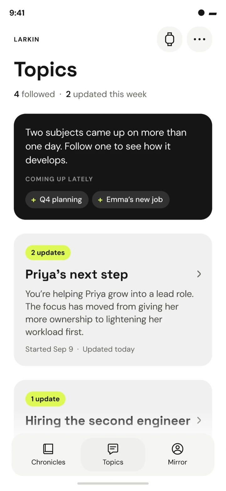
04 Topics
Follow what keeps coming back.
When a subject returns across days — a hire, a friend's new job, a teammate's next step — follow it and watch the story develop.
-
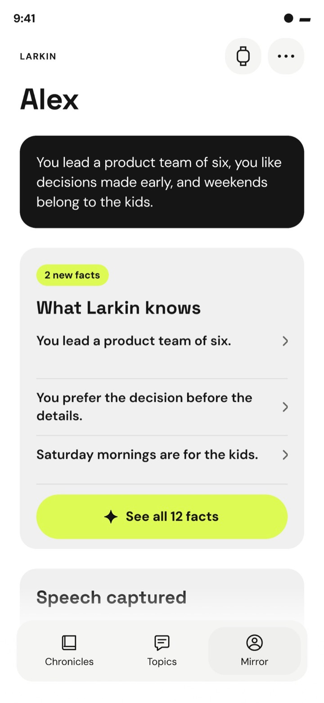
05 Mirror
See yourself more clearly.
What Larkin has learned about you, in plain sentences. New facts wait for your review, and each one shows the day it came from.
Use cases
How will you use yours?
For leaders
Every promise your team trusts you with, kept
For the ADHD brain
It catches what working memory drops
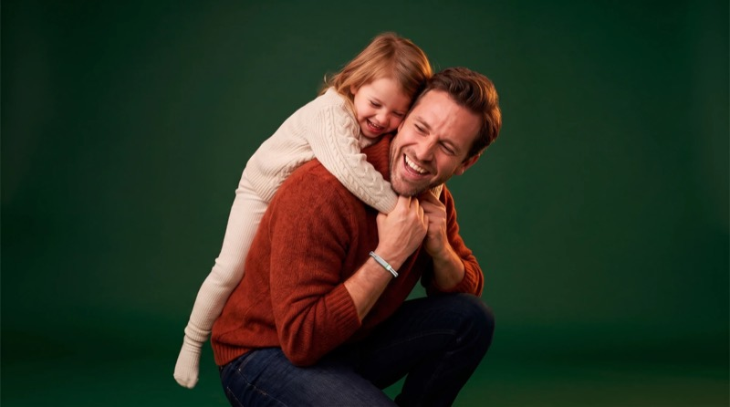
For parents
Their little voices, kept word for word
For journaling
The journal that writes itself
Privacy
Private and secure by design.
How your voice is protected, from wrist to app.
Encrypted, transcribed, then erased
Speech becomes text within seconds and the recording is erased. The only audio kept is a highlight you chose to save.
Stopped at the source in two seconds
Hold the module and it stops listening. Nothing is captured until you start it again.
Nothing travels in the clear
Encrypted the moment it leaves the band, and everywhere it is stored after.
Delete means destroyed, not archived
Remove one conversation, one day, or every day you have worn it.
No third party ever touches it
Never sold to advertisers or data brokers, and never used to train a model.
Bound to a single account
One band, one account. Nothing is shared, and no one else can open it.
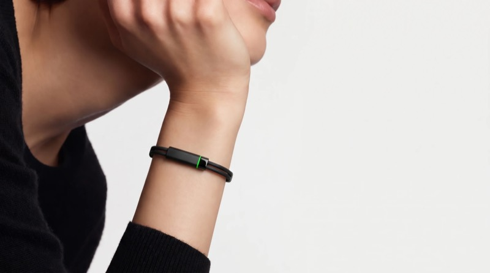
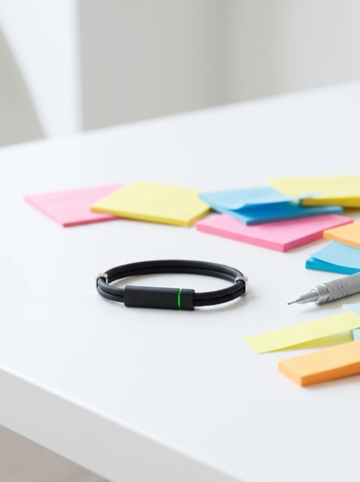
Founder Edition — limited to 1,000
Reserve your Larkin
$149 $99 founder price
Reserve yours today with a fully refundable $10 deposit.
- Larkin Membership included, forever
- Numbered founder unit, shipped first
- Refundable any time
You pay $10 now and $89 when it ships in Q1 2027.
How it compares
Nothing to open. Nothing to press.
Scroll the table sideways to see every column.
| Capability | Larkin Worn on your wrist, always on | Phone app In your pocket, you open it and press record | Apple Watch app On your wrist, but you tap a screen to start it | Hardware recorder Clipped on, you press to record |
|---|---|---|---|---|
| Nothing to open or press | Yes | No | No | No |
| Worn on your body all day | Yes | No | Yes | No |
| No screen | Yes | No | No | Yes |
| Records both people talking | Yes | Only if out | Partly | Yes |
| Picks out what matters instead of a transcript | Yes | No | No | Partly |
| Makes reminders from what you said | Yes | If you type them | If you dictate | Partly |
| A light shows when it's on | Yes | No | No | Partly |
Based on published specifications and everyday use, July 2026. Apple Watch and Plaud are trademarks of their respective owners.
The device
Designed to disappear.
No screen to check. One thin light, and it only glows while Larkin is listening.
Simple, screen-free.
- Battery
- 7 days · 160 h listening
- Microphones
- 2, with noise filtering
- Weight
- 11 g, module and band
- Controls
- One press. No screen
- Band
- Silicone, 140–200 mm
- Water resistance
- IPX5
- Charging
- Magnetic USB-C, 90 min
- Languages
- 40+
- Works with
- iPhone & Android, Bluetooth LE
- Storage on band
- 3 days without your phone
Questions
Good to know.
Does it record everything I say?
It listens while you're wearing it, but it doesn't keep the audio. Speech is turned into text and the recording is deleted — the only sound kept is a highlight you pressed to save.
How do I stop it listening?
Hold the module for two seconds. It stops until you hold it again. You can also pause it from the app.
What about recording laws where I live?
They differ by country and by state. The app tells you what applies where you are.
Do I need my phone with me?
No. The band holds about three days on its own and syncs when your phone is nearby.
How long does the battery last?
Seven days of normal wear, around 160 hours of listening. Ninety minutes on the magnetic charger takes it back to full.
What does it cost, and when does it ship?
$99 at launch instead of $149. A $10 deposit holds one from the first run of 1,000 and is refundable at any point. Ships Q1 2027.
Keep what mattered.
Founder Edition, $99 instead of $149. Hold one with a refundable $10.
Reserve yours — $10